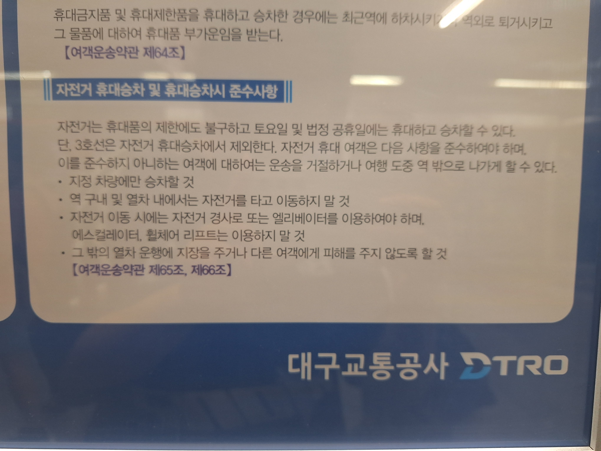
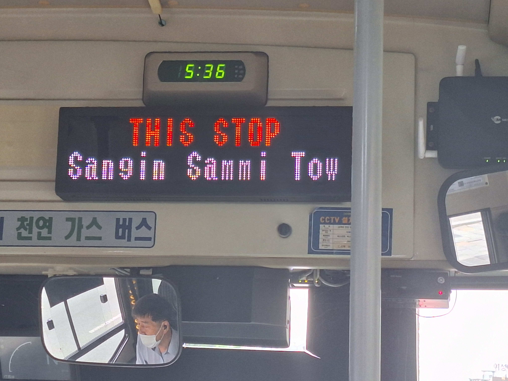
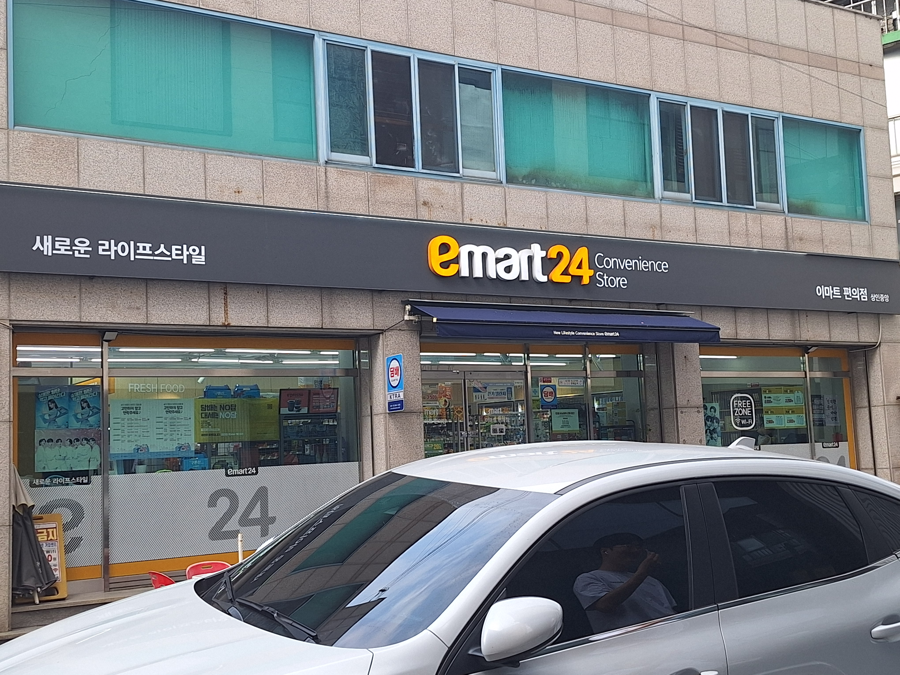
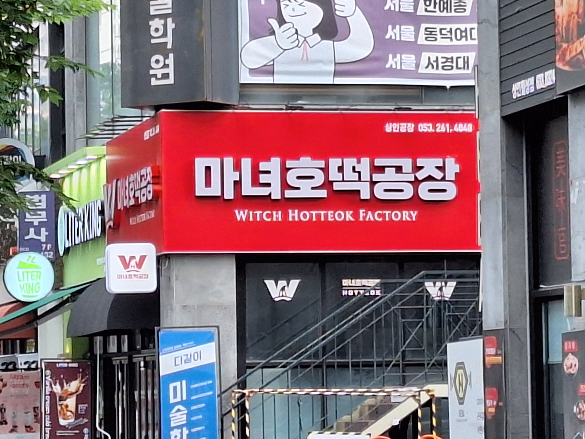
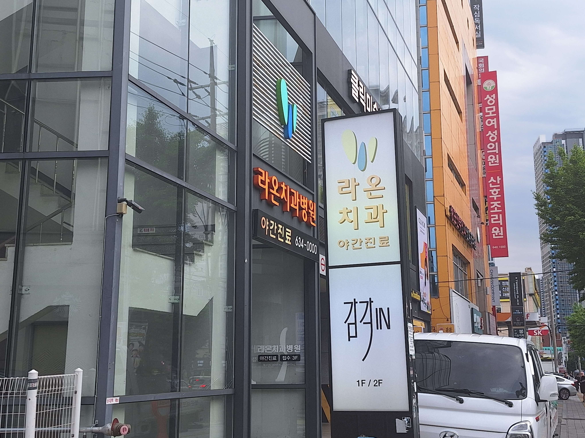
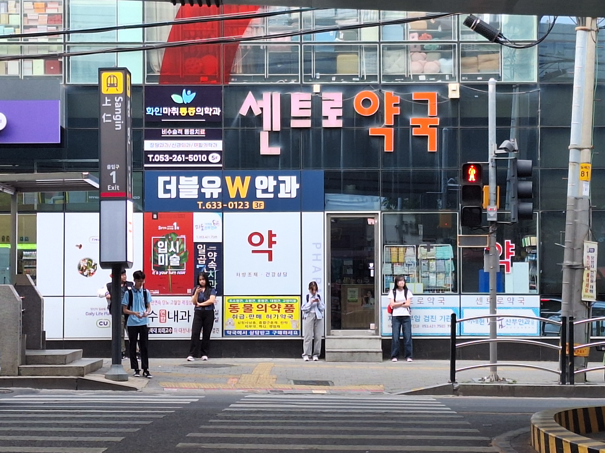
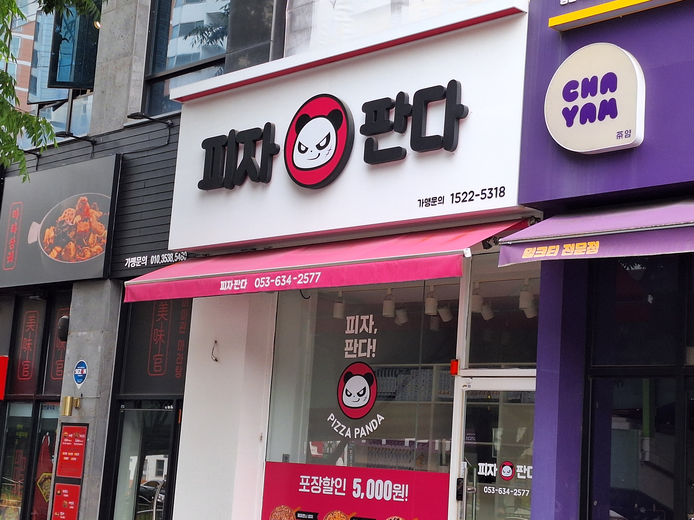
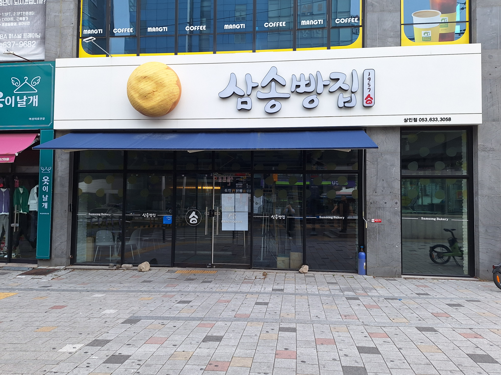
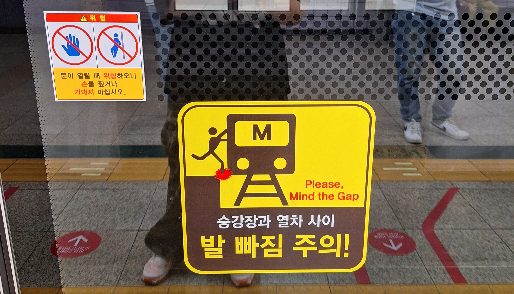
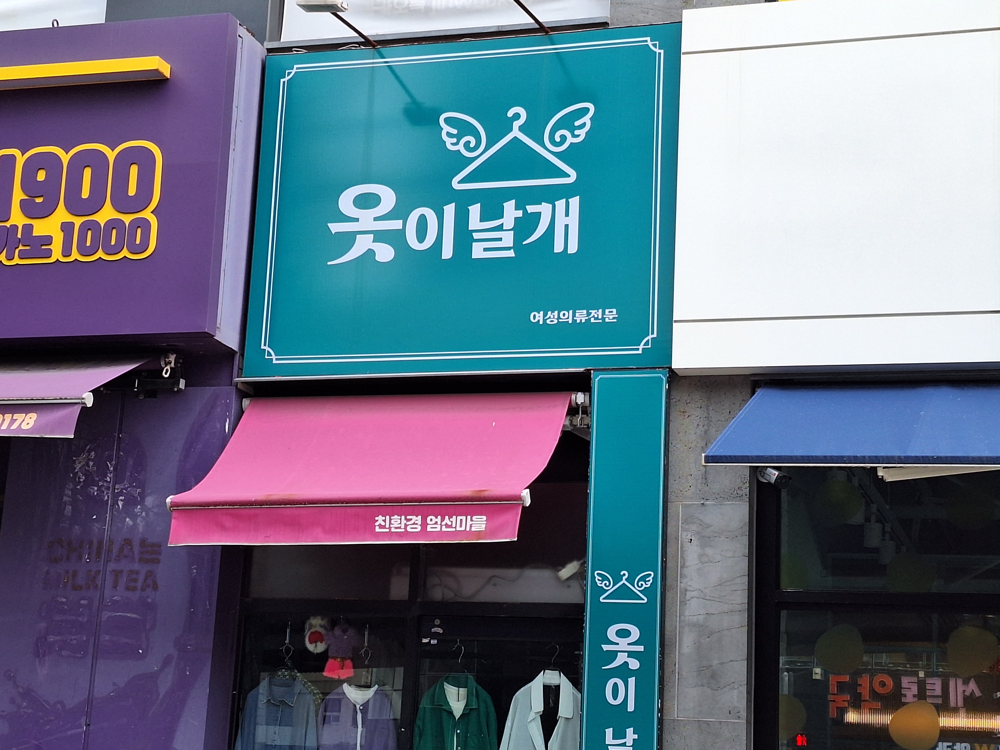

지하철 준수사항

지하철 역 내부에 게시된 준수사항이다.
저번 수업에서 들었던 것처럼 용어의 대부분이 한자어였다. 공문서들이 특히나 그런 경향이 더욱 심하다. 제한, 불구, 법정, 공휴일, 승차, 휴대, 여객, 도중, 거절, 이동, 이용,열차, 운행 등 거의 대부분의 주요한 용어들은 모두 한자어다.
이런 점들을 보니 역사와도 관계가 깊지 않을까 하는 궁금점도 들었다. 우측 보행이 일제강점기의 영향인 것처럼 우리나라도 세종대왕이 한글을 창제하기 이전에는 한자를 사용했기 때문이다.
버스 안내 전광판

버스 내부에 있는 전광판이다. 다음 역과 그 다음 역을 안내한다.
사진에는 영어 뿐이지만 한글, 영어, 일본어 순서대로 역을 안내하는 문구가 나타난다. 3가지 언어의 순서가 위계를 보여준다.
제 1 외국어인 영어, 최근 제 2 외국어로 많이 공부하는 일본어가 순서대로 나온 점이 버스를 이용하는 각 언어 사용자의 빈도에 따라 정해졌다. 항상 관광지나 대중교통의 안내 문구에는 영어가 우선, 그 다음은 일본어나 중국어가 당연한 수순처럼 적혀있다. 일본의 유명 관광지나 필리핀 관광지에 한글이 많은 것과 동일한 이유다.
편의점 간판

프랜차이즈 emart24 편의점의 간판이다.
길을 걸어가며 주변 편의점들의 간판을 보니 유독 외래어가 많았다. 우리가 부르는 편의점이란 단어는 정작 한자어지만 편의점의 간판에는 영어가 많이 보인다.
새로운 라이프 스타일이라는 단어를 새로운 삶 꾸밈새로 바꿔도 좋다. convenience store이라는 단어도 옆에 편의점이라는 문자가 있기 때문에 들어갈 필요가 없다. free zone도 공짜, 무료라는 단어로 대체가 가능하다.
호떡 가게 간판

호떡을 파는 가게의 간판이다.
어감이나 분위기가 귀엽게 작명된 상호명이다.
하지만 이런 느낌을 더 잘 살리려면 공장이라는 한자어 대신 방앗간 같은 순우리말을 사용해도 좋다. 이 가게에서 빵을 팔기 때문에 더욱 잘 어울린다.
치과 간판

라온이라는 상호명의 치과 간판이다.
주변을 둘러보며 어렵게 찾은 순우리말 간판이다.
라온이라는 단어는 최근 아이들 이름으로도 자주 사용되는 순우리말이다. 즐거운이라는 뜻을 가지고 있다. 뜻도 좋고 어감도 좋은 단어라서 기억에 남았다.
약국 간판

센트로 약국의 간판이다.
이 건물을 보면서 유독 의료 업계 관련 상호명들은 외래어가 많다는 걸 느꼈다.
서양 의학 관련이기 때문인지 영어가 아주 흔하게 보인다. 반면에 한의학 관련 병원에서는 한자어를 자주 사용한다. 각 단어들이 주는 전문적인 느낌이 영향을 끼치기 때문이다.
피자 가게 간판

피자 가게의 간판이다.
피자와 판다라는 단어를 사용한 언어 유희다.
상당히 일상적으로 느껴지는 단어들이지만 사실 두 단어 모두 외래어다. 피자, 판다. 이런 유머적인 요소도 좋지만 가장 마지막 이미지의 옷이 날개 간판이 우리말을 지키는 방면에선 더 좋다.
빵집 간판

삼송 빵집의 간판이다.
오른쪽의 작게 써진 1957이라는 문구를 보면 역사가 오래된 빵집이라는 정보를 알 수 있다.
보통 오래된 빵집들은 베이커리라는 단어보다 빵집이라는 단어를 자주 사용한다. 어르신들이 파리바게트나 뚜레쥬르 같은 체인점보다 동네 시장 빵집에 더 정감을 느끼는 데에는 다 이유가 있다.
지하철 주의 문구

지하철 승강장의 주의 문구다.
노란색 스티커에는 발 빠짐 주의! 라는 문구가 가장 크게 적혀있다.
각 문구의 크기 차이가 위계를 잘 보여주고 더 중요한 정보가 먼저 눈에 들어오게 잘 쓰여지고 있다. 그리고 오른쪽에는 빨간 문구가 쓰여져 있는데 영어로 표기되어 있다. 영어, 한국어를 사용하지 못하는 외국인은 어쩌면 난감할 수 있지 않을까?
옷 가게 간판

옷 가게의 간판이다.
옷이 날개라는 상호명은 오래된 속담을 응용한 것이다.
날개라는 단어의 유래도 순우리말의 재미를 느낄 수 있다. 요즘 속담이나 사자성어를 모르는 어린 아이들이 늘어가고 있는데 이런 귀여운 간판도 더 생겨나면 좋겠다. 우리말과 속담을 사용한 간판은 요즘 시대에 정말 찾아보기 힘들다.